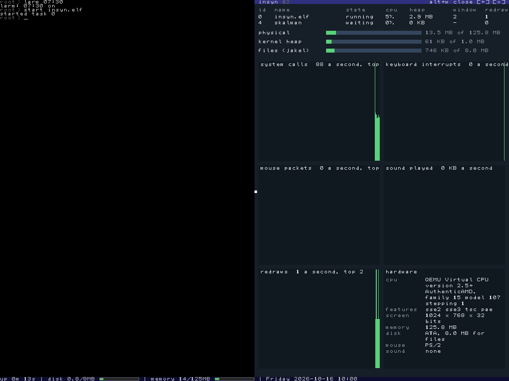

insyn
insyn shows what moonshot is doing, for finding out why something is slow or
full. it is an ordinary ring-3 program started with start insyn.elf. it only looks, it changes nothing, with everything on one screen that alt-w closes.

- processes
- every task, its name, whether it runs or waits, its share of the cpu, its heap, its window (the number in that window's title) and how many times a second it puts a new picture in it. under them physical memory, the kernel's heap and the files in jakel as meters.
- graphs
- system calls, keyboard and mouse input, sound played and redraws, each a second, over the last two minutes.
- hardware
- beside the last graph, the cpu by name, its family and features, the screen, the memory, the disk, the mouse and the sound card.
a task's share of the cpu is how many timer ticks found it working rather than waiting. a program that waits gives the cpu away at once (see chrone), so one that is idle shows close to nothing.
everything comes from one system call, SYS_INFO, read twice a
second, which copies the kernel's counters out and lets nothing in.